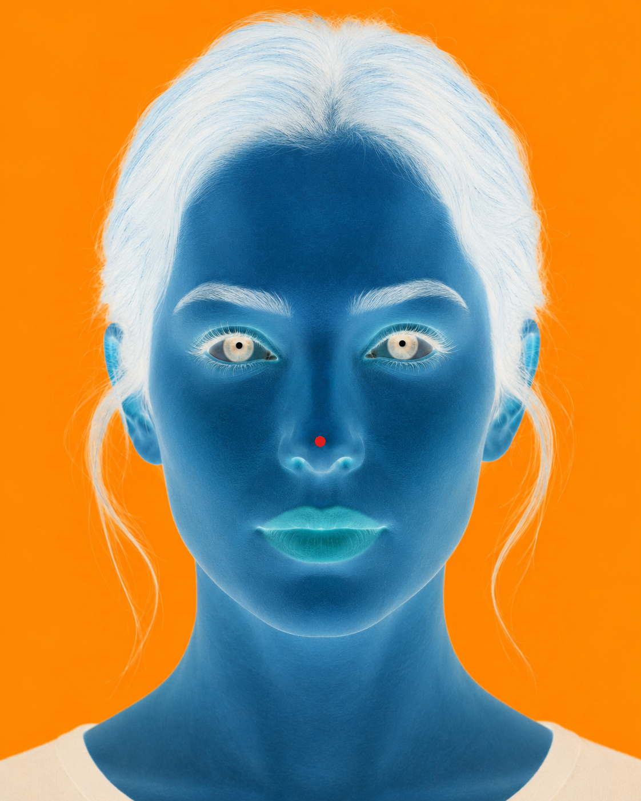

Afterimage Experiment
When you start, keep your eyes fixed on the red dot on the nose for 15 seconds. Do not scan the face. The image will then switch automatically to a blank fixation screen.
Tip: maximize the window and sit at a comfortable viewing distance.

Did a more natural-looking face briefly appear on the blank screen?